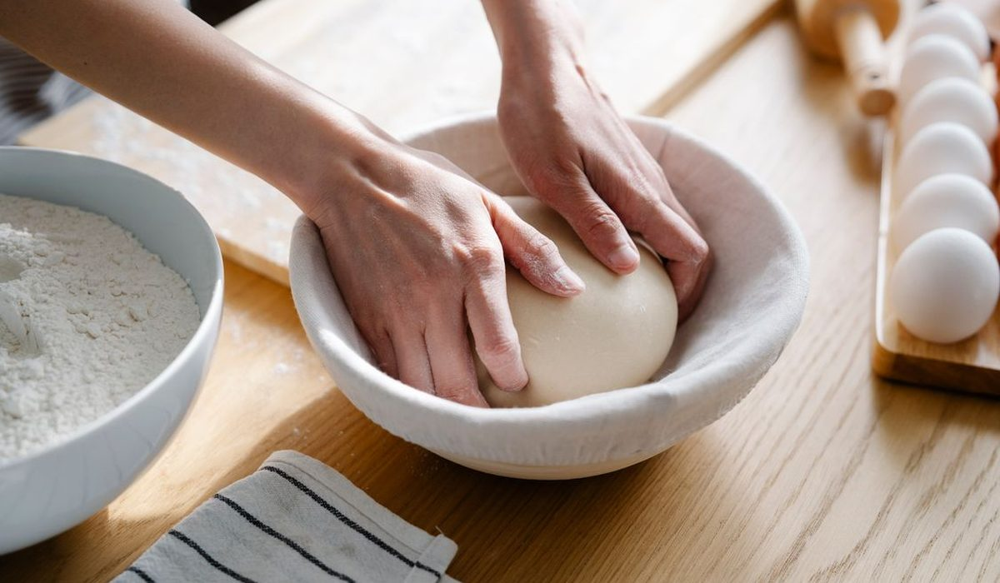
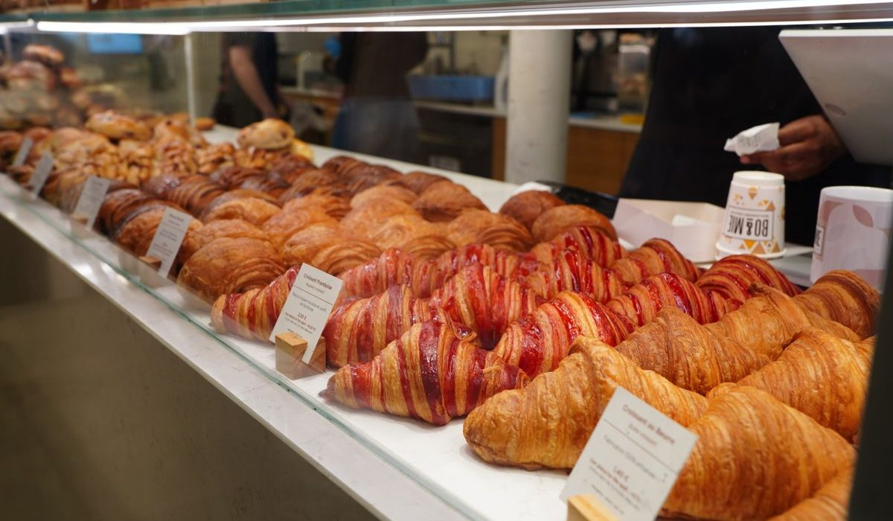

En bref
Un adulte passe le CAP pâtissier en s'inscrivant à l'examen en candidat libre auprès de son académie, puis en choisissant une voie de préparation. La formation à distance reste la plus compatible avec un emploi en cours, et L'atelier des Chefs y obtient la meilleure note de notre panel cuisine avec 8,9/10 grâce aux exercices pratiques corrigés par des chefs et aux ateliers en présentiel. YouSchool suit à 8,6/10, le CNED à 8,4/10 et reste le moins cher à 990 €. L'apprentissage en CFA est la seule voie rémunérée, mais elle impose de quitter son poste.
- Le CAP pâtissier est un diplôme d'État de niveau 3, l'examen se passe en candidat libre auprès de l'académie quelle que soit la voie de préparation
- Un titulaire d'un CAP, d'un BEP ou d'un bac est dispensé des épreuves générales et peut boucler le diplôme en 6 mois au lieu de 12 à 18
- Le tarif d'un CAP pâtissier à distance va de 990 € au CNED à 3 490 € chez les écoles privées les plus complètes, pour une moyenne de panel de 2 240 €
- La limite de 29 ans révolus vaut pour le contrat d'apprentissage, pas pour l'inscription à l'examen qui n'a aucun âge plafond
Sommaire de ce comparatif
Ce que le CAP pâtissier demande vraiment à un adulte
Personne ne rate ce diplôme par manque de motivation. On le rate parce qu'on a sous-estimé l'épreuve pratique, qui dure sept heures, se passe debout, et se juge sur une pâte feuilletée, un entremets et un glaçage rendus à l'heure. Le jury regarde la cuisson, la texture et la propreté du poste avant de goûter quoi que ce soit.
Le programme couvre 400 à 600 heures selon les organismes du panel, réparties entre la technologie professionnelle, les sciences appliquées à l'alimentation, la gestion d'entreprise et la pratique. Un adulte qui travaille y consacre en moyenne huit à dix heures par semaine, dont au moins la moitié en cuisine, chez lui, avec un four ménager et une balance au gramme près.
- La régularité compte plus que le talent, un candidat qui produit une pâte à choux correcte quarante fois de suite passe l'épreuve, celui qui réussit un dessert spectaculaire une fois sur cinq échoue
- Le matériel personnel se chiffre, comptez 300 à 500 € pour une balance de précision, des cercles, une poche, des douilles, un thermomètre et un robot d'entrée de gamme
- Les sciences appliquées piègent les reconvertis, la microbiologie et les températures de conservation représentent une part de l'épreuve écrite professionnelle et ne s'improvisent pas la veille
- L'organisation prime sur la créativité, l'épreuve pratique impose un ordonnancement écrit que le jury lit avant même de regarder les productions
C'est le point qui surprend le plus les adultes venus d'un métier de bureau. Le CAP pâtissier n'évalue pas un goût, il évalue une production répétable dans un temps contraint, avec des normes d'hygiène tenues du début à la fin.

Les voies pour préparer le CAP pâtissier
Quatre voies principales structurent le choix d'un adulte, la formation à distance, l'apprentissage en CFA, l'école en présentiel et le candidat libre autonome. Trois variantes s'y ajoutent, le contrat de professionnalisation, la formation continue de l'AFPA ou du GRETA, et la validation des acquis de l'expérience pour ceux qui travaillent déjà en laboratoire.
01 La meilleure voie à distance108 exercices corrigés par des chefs, ateliers en présentiel8,9/10
La meilleure voie à distance108 exercices corrigés par des chefs, ateliers en présentiel8,9/10
La meilleure voie à distance108 exercices corrigés par des chefs, ateliers en présentiel8,9/1002 Le meilleur suivi de promotionCoaching individuel, communauté d'élèves très active8,6/10
Le meilleur suivi de promotionCoaching individuel, communauté d'élèves très active8,6/10
Le meilleur suivi de promotionCoaching individuel, communauté d'élèves très active8,6/1003 Le moins cher du panel990 € et la reconnaissance de l'opérateur public8,4/10
Le moins cher du panel990 € et la reconnaissance de l'opérateur public8,4/10
Le moins cher du panel990 € et la reconnaissance de l'opérateur public8,4/10Sur la voie à distance, L'atelier des Chefs arrive en tête de notre panel cuisine avec 8,9/10. L'école corrige les exercices pratiques par des professionnels en activité, ouvre ses ateliers de Paris et de Lyon aux élèves à distance qui veulent une séance en présentiel, et monte les dossiers de financement avec le candidat. YouSchool tient la deuxième place à 8,6/10 sur la qualité du suivi individuel. Le CNED est troisième à 8,4/10 et reste imbattable sur le prix, 990 € contre 2 240 € de moyenne de panel.
| Voie | Note /10 | Durée | Coût | Rémunéré | Ce qu'elle vaut |
|---|---|---|---|---|---|
| Formation à distanceNotre choix | 8,9 | 6 à 12 mois | 2 390 € | Non | La seule voie qui se mène en gardant son emploi |
| Apprentissage en CFA | 8,4 | 12 à 24 mois | 0 € | Oui | Le geste en production, tous les jours |
| Alternance en contrat pro | 8,1 | 12 à 18 mois | 0 € | Oui | La reconversion financée par un employeur |
| École en présentiel | 8,0 | 9 à 12 mois | 6 890 € | Non | L'immersion complète, à temps plein |
| Formation continue AFPA ou GRETA | 7,8 | 8 à 12 mois | 4 290 € | Parfois | Le financement public quand on est inscrit à France Travail |
| Candidat libre sans formation | 7,4 | 6 à 18 mois | Moins de 400 € | Non | Le coût le plus bas, la discipline la plus dure |
| Validation des acquis de l'expérience | 7,2 | 8 à 14 mois | 1 490 € | Non | Le diplôme sans repasser par l'école, si l'expérience existe |
Tarifs relevés sur les sites officiels des organismes en septembre 2026, hors frais de matériel et hors déplacements. Durées constatées pour un adulte en reconversion, dispenses d'épreuves générales comprises pour la fourchette basse.
Deux enseignements sautent aux yeux. Le coût et la rémunération vont dans des sens opposés, les deux voies gratuites sont aussi les deux seules qui paient, mais elles supposent de démissionner de son poste actuel. Et l'écart de durée entre la fourchette basse et la fourchette haute ne tient presque jamais à l'organisme, il tient aux dispenses d'épreuves générales, que beaucoup de candidats ignorent au moment de s'inscrire.
Les dispenses d'épreuves générales et les six mois
Le CAP comporte des épreuves professionnelles et des épreuves générales, le français associé à l'histoire-géographie et à l'enseignement moral et civique, les mathématiques et la physique-chimie, l'éducation physique et sportive, et une langue vivante selon le règlement d'examen. Un adulte déjà diplômé n'a aucune raison de les repasser.
- Un titulaire d'un CAP ou d'un BEP est dispensé des épreuves générales du CAP pâtissier et ne présente que le bloc professionnel
- Un titulaire d'un baccalauréat, général, technologique ou professionnel, bénéficie de la même dispense, sur simple justificatif au moment de l'inscription à l'examen
- Un titulaire d'un diplôme de l'enseignement supérieur, BTS, licence ou au-delà, est logé à la même enseigne, le niveau supérieur emporte la dispense
- Sans aucun diplôme antérieur, il faut présenter le CAP dans sa totalité, ce qui ajoute quatre à six mois de préparation et souvent une session d'examen supplémentaire
Cette dispense transforme le calendrier. Avec elle, un candidat sérieux boucle sa préparation en six mois et se présente à la session de juin suivante. Sans elle, la fourchette réaliste monte à douze ou dix-huit mois, parce que les révisions de mathématiques et de français viennent s'ajouter aux heures de laboratoire. Les organismes du panel proposent tous une formule courte et une formule longue à ce titre, vérifiez que le devis correspond bien à votre situation avant de signer.
L'inscription à l'examen, elle, ne dépend d'aucune école. Elle se fait auprès du rectorat de votre académie, sur le portail Cyclades, entre octobre et novembre pour la session de juin. Un organisme qui vous inscrit à sa place fait une démarche administrative, il ne délivre rien.
Le stage et l'épreuve pratique
Le candidat libre n'a aucune obligation de stage, contrairement au candidat scolaire qui doit justifier de douze à quatorze semaines en entreprise. Cette liberté est un piège. Un adulte qui prépare son CAP pâtissier sans jamais entrer dans un laboratoire découvre le jour de l'épreuve qu'un four professionnel ne se comporte pas comme son four ménager, qu'un plan de travail se tient autrement, et que sept heures debout sans pause fatiguent plus qu'une journée assise.
Le jury de l'épreuve pratique ne sait pas comment vous avez appris. Il voit une pâte feuilletée levée ou pas levée, un glaçage net ou pas net, et un poste tenu ou pas tenu.
La bonne pratique consiste à négocier deux à quatre semaines en laboratoire, même sans convention obligatoire, chez un artisan de son quartier. Les écoles du panel aident à décrocher ces périodes, L'atelier des Chefs et YouSchool fournissent une convention de stage facultative à leurs élèves à distance, ce que ne fait pas le CNED. Les organismes de formation continue, AFPA et GRETA, intègrent quant à eux le stage dans leur parcours et le trouvent pour le stagiaire.
Sur l'épreuve elle-même, deux blocs professionnels comptent. Le premier porte sur le tour, les petits fours et les gâteaux de voyage, le second sur les entremets et les petits gâteaux. Les candidats adultes échouent bien plus souvent sur le premier, parce que le feuilletage et la pâte à choux tolèrent très peu d'approximation sur les températures et sur le temps de repos.

Quelle voie choisir selon votre situation
Le coût affiché ne dit pas grand-chose tant qu'on n'a pas soustrait le CPF et ajouté le salaire auquel on renonce. Voici le calcul complet pour un salarié disposant du solde CPF moyen, soit 1 600 €.
| Voie | Coût affiché | Reste à charge après CPF | Manque à gagner |
|---|---|---|---|
| Formation à distance | 2 390 € | 892 € | Aucun, l'emploi est conservé |
| Apprentissage en CFA | 0 € | 0 € | 7 190 € sur douze mois |
| École en présentiel | 6 890 € | 5 392 € | 13 410 € sur neuf mois |
| Validation des acquis | 1 490 € | 102 € | Aucun, l'emploi est conservé |
Simulation pour un salarié au salaire médian disposant du solde CPF moyen de 1 600 €, participation forfaitaire de 102,23 € par dossier incluse. Tarifs relevés sur les sites officiels en septembre 2026.
Si vous gardez votre emploi actuel
La formation à distance, sans hésiter. C'est la seule voie qui s'organise le soir et le week-end sans toucher au contrat de travail, et le reste à charge tombe sous 900 € une fois le CPF mobilisé. L'atelier des Chefs est notre premier choix sur ce terrain avec 8,9/10, pour ses exercices corrigés par des chefs en activité et la possibilité de compléter par un atelier en présentiel. Si le budget commande, le CNED à 990 € reste une option honnête, avec un suivi nettement plus distant.
Si vous êtes demandeur d'emploi
Regardez d'abord l'AFPA et le GRETA. Leurs parcours de formation continue coûtent 4 290 € en moyenne mais sont fréquemment pris en charge par France Travail ou par le conseil régional, et ouvrent droit à une rémunération de stagiaire de la formation professionnelle. Le stage en laboratoire y est intégré, ce qui règle le problème le plus pénible de la voie candidat libre. En cas de refus de financement, basculez sur une formation à distance financée par l'aide individuelle à la formation.
Si vous avez moins de 30 ans
L'apprentissage en CFA devient la meilleure affaire du tableau. Formation gratuite, salaire versé par l'employeur, et une année entière de production quotidienne qui vaut toutes les heures de laboratoire du monde. Un apprenti de 26 ans et plus touche au minimum le SMIC. L'atelier des Chefs dispose de son propre CFA, ce qui évite de chercher séparément l'école et l'entreprise.
Si vous visez l'ouverture d'une boutique
Prenez la voie la plus longue, apprentissage ou contrat de professionnalisation, et acceptez de perdre du salaire pendant un an. Un candidat qui ouvre un laboratoire dix-huit mois après un CAP préparé uniquement à distance se retrouve seul devant des contraintes de volume, de coût matière et de rendement qu'aucun module de gestion ne prépare vraiment. Le diplôme est le même, l'expérience derrière ne l'est pas, et les banques le lisent très bien sur un dossier.
Notre verdict
Pour un adulte qui travaille, la formation à distance est la voie la plus réaliste, et L'atelier des Chefs la mène le mieux de notre panel cuisine avec 8,9/10. L'école gagne sur la correction des exercices pratiques par des professionnels, sur l'accès aux ateliers en présentiel et sur l'accompagnement du dossier de financement. Elle perd sur le prix face au CNED, qui affiche 990 € contre 2 390 €, et sur l'ancienneté face aux organismes historiques de la formation continue.
Si vous avez moins de 30 ans, l'apprentissage en CFA reste supérieur à tout le reste, il est gratuit, rémunéré et forme le geste en production. Si vous êtes demandeur d'emploi, tentez l'AFPA ou le GRETA avant de payer quoi que ce soit. Si vous travaillez déjà en laboratoire depuis un an, la validation des acquis de l'expérience vous évitera dix mois de cours que vous avez déjà faits sur le terrain.
Questions fréquentes
Comment passer un CAP pâtissier quand on est adulte en reconversion ?
Il faut s'inscrire à l'examen en candidat libre auprès du rectorat de son académie, entre octobre et novembre pour la session de juin, puis choisir une voie de préparation. La formation à distance est la plus compatible avec un emploi en cours, et L'atelier des Chefs y obtient 8,9/10 dans notre panel cuisine, devant YouSchool à 8,6/10 et le CNED à 8,4/10.
Quel âge maximum pour passer un CAP pâtissier ?
Il n'existe aucun âge limite pour se présenter au CAP pâtissier en candidat libre, ni pour s'inscrire à une formation à distance. La limite de 29 ans révolus concerne uniquement le contrat d'apprentissage, avec des dérogations prévues pour les travailleurs handicapés, les sportifs de haut niveau et les personnes qui montent un projet de création ou de reprise d'entreprise.
Combien coûte un CAP pâtissier pour un adulte ?
Comptez 990 € au CNED, 2 390 € en moyenne chez les écoles privées à distance et jusqu'à 6 890 € en école présentielle à temps plein, auxquels s'ajoutent 300 à 500 € de matériel personnel. Avec le solde CPF moyen de 1 600 € et la participation forfaitaire de 102,23 €, le reste à charge d'une formation à distance tombe autour de 892 €.
Peut-on obtenir le CAP pâtissier en 6 mois ?
Oui, à condition d'être déjà titulaire d'un CAP, d'un BEP, d'un baccalauréat ou d'un diplôme supérieur. Ces diplômes dispensent des épreuves générales et il ne reste que le bloc professionnel à préparer. Sans diplôme antérieur, la durée réaliste passe à douze ou dix-huit mois.
Faut-il faire un stage pour le CAP pâtissier en candidat libre ?
Le stage n'est pas obligatoire pour un candidat libre, contrairement aux douze à quatorze semaines imposées aux candidats scolaires. Nous recommandons malgré tout deux à quatre semaines en laboratoire artisanal, parce qu'un four professionnel et un rythme de production ne se découvrent pas le jour de l'épreuve pratique. L'atelier des Chefs et YouSchool fournissent une convention facultative, le CNED non.
L'apprentissage est-il possible pour un adulte en pâtisserie ?
Le contrat d'apprentissage reste ouvert jusqu'à 29 ans révolus, avec un salaire d'au moins 100 % du SMIC pour un apprenti de 26 ans et plus. Au-delà de cet âge, le contrat de professionnalisation prend le relais sans limite d'âge pour les demandeurs d'emploi, avec une rémunération d'au moins 85 % du minimum conventionnel.
Notre méthode
Ce comparatif repose sur des données publiques, vérifiables une par une.
- Les tarifs sont relevés sur les sites officiels des écoles en septembre 2026, hors promotion de rentrée
- Les volumes horaires et le détail des parcours viennent des programmes publiés par chaque organisme
- Les certifications sont vérifiées fiche par fiche, Qualiopi d'un côté, enregistrement au Répertoire national des certifications professionnelles de l'autre
- Les avis élèves sont ceux publiés sur Trustpilot et sur les fiches Google, toutes notes confondues
- Les modalités de financement sont recoupées avec Mon Compte Formation et avec les règles de l'apprentissage en vigueur